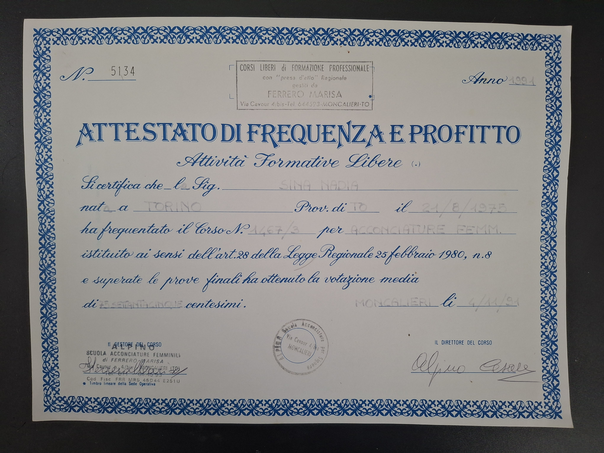
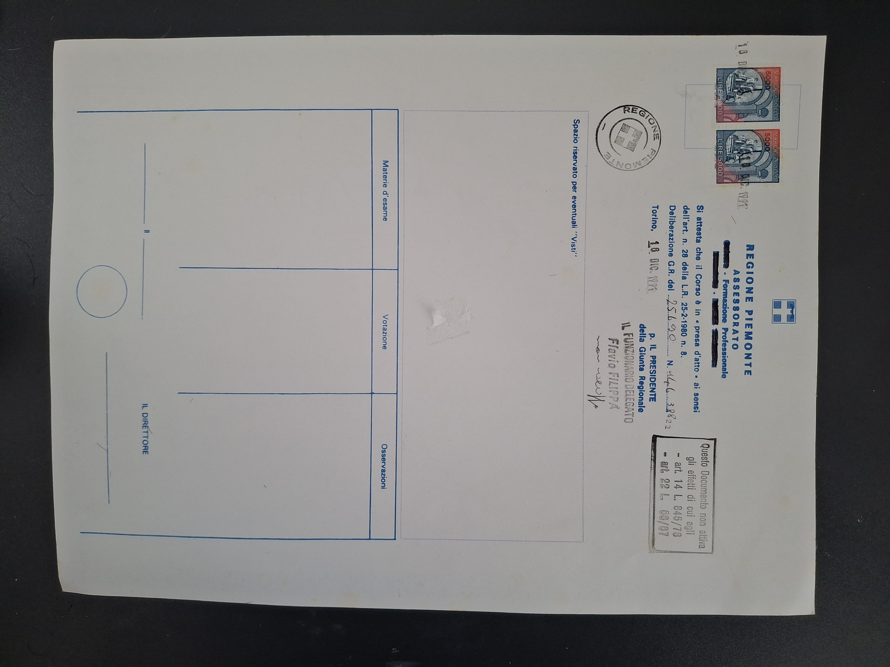

Formación y cualificaciones al servicio de la belleza
Obtuve mi diploma de peluquera profesional en 1994 en la Escuela de Peluquería Femenina de Ferrero Marisa (Alpino) en Moncalieri, provincia de Turín. Desde entonces, he seguido perfeccionando mis habilidades.
Año 1994
Título: Certificado de Asistencia y Aprovechamiento - Peluquería Femenina
Escuela: Escuela de Peluquería Femenina de Ferrero Marisa (Alpino)
Dirección: Via Cavour 4/bis, Moncalieri (TO), Italia
Nº Certificado: 5134
Nota: 75/100
Fecha de emisión: 4 de noviembre de 1994

Página 1 del Diploma

Página 2 del Diploma
Formación Profesional
Nail Artist diplomada con habilidades en:
El diploma italiano está siendo reconocido por Coiffure Suisse Ticino para ejercer la actividad profesional en Suiza.
Contacto: Coiffure Suisse Ticino - info@coiffuresuisseticino.ch - Tel: 091 857 17 31